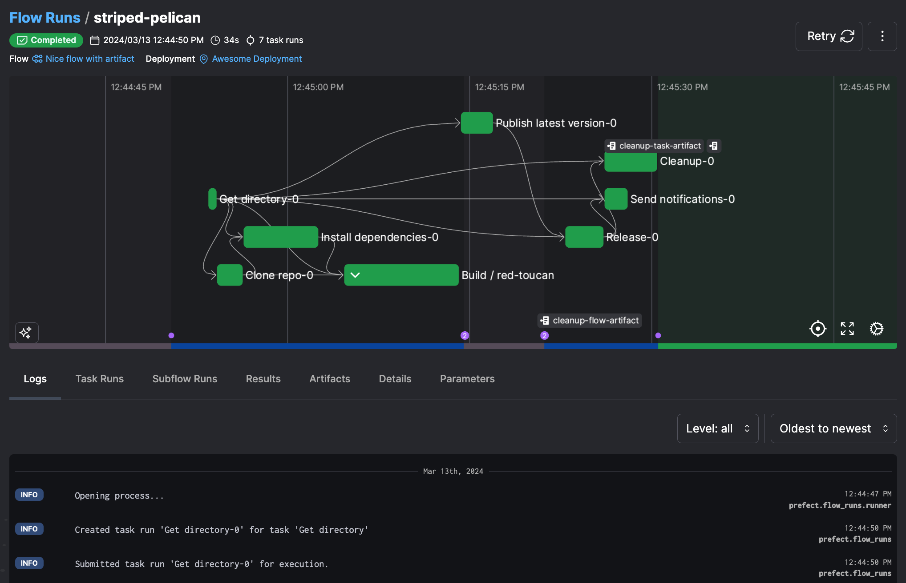
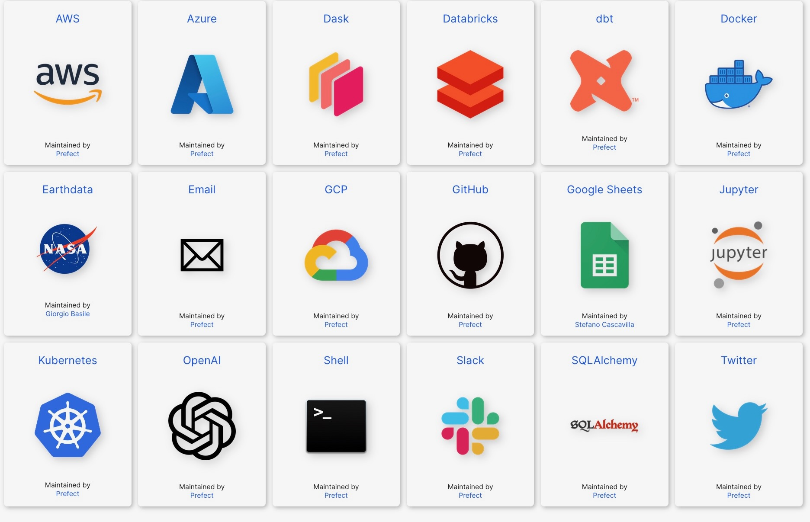
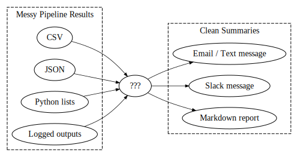

Week 9: ETL Pipelines with Prefect
DSAN 5500: Data Structures, Objects, and Algorithms in Python
Class Sessions
Schedule
Today’s Planned Schedule:
| Start | End | Topic | |
|---|---|---|---|
| Lecture | 6:30pm | 6:50pm | Key Concepts → |
| 6:50pm | 7:00pm | Execution Graphs → | |
| 7:00pm | 7:15pm | Deployments (Preview) → | |
| 7:15pm | 8:00pm | Lab Part 1 → | |
| Break! | 8:00pm | 8:10pm | |
| 8:10pm | 9:00pm | Lab Part 2 → |
Key Concepts
The Three Main Buzzwords
(Underlined terms link to relevant section of docs)
Flow: The “main thing” your pipeline is doing!- Except in simple cases, will consist of multiple
Tasks
- Except in simple cases, will consist of multiple
Flows andTasks alone already provide much more functionality than “basic” functions…Deployments:Flows +Tasks + Metadata about how and when you want them to run.- “Deployments elevate workflows from [functions that you call manually] to [API-managed entities].”
Deployments \(\Rightarrow\) Run Flows Programmatically

The Power of Deployments (More Next Week)
- “Packaging” code as
DeploymentsenablesTriggers: Logging,Notifications(Slack, email, text messages)Resultsas natural-language explanations (produced by Prefect) or custom summaries, calledArtifacts, that you define as part of your flows
Schedules
crontab.sh
# ┌───────────── minute (0–59)
# │ ┌───────────── hour (0–23)
# │ │ ┌───────────── day of the month (1–31)
# │ │ │ ┌───────────── month (1–12)
# │ │ │ │ ┌───────────── day of the week (0–6) (Sunday to Saturday)
# │ │ │ │ │
# │ │ │ │ │
# │ │ │ │ │
# * * * * * <command to execute>Events
- These integrations are nice, but in reality usually overkill: you can just use
Webhooks

Logging
- For most non-advanced use cases: literally just put
log_prints=Trueas a parameters of yourFlow:
flow_with_logging.py
from prefect import task, flow
@task
def my_task():
print("we're logging print statements from a task")
@flow(log_prints=True)
def my_flow():
print("we're logging print statements from a flow")
my_task()Notifications
- Actually immensely powerful, because it uses a templating engine called
Jinjawhich is VERY worth learning! - With your brain in pipeline mode, think of Jinja as the [?] in:

Jinja Example
homepage.jinja
<h3>{{ me['name'] }}'s Favorite Hobbies</h3>
<ul>
{%- for hobby in hobbies %}
<li>{{ hobby }}</li>
{%- endfor %}
</ul>render_jinja.py
from jinja2 import Template
tmpl = Template('homepage.jinja')
tmpl.render(
me = {'name': 'Jeff'},
hobbies = [
"sleeping",
"jetski",
"getting sturdy"
]
)rendered.html
<h3>Jeff's Favorite Hobbies</h3>
<ul>
<li>sleeping</li>
<li>jetski</li>
<li>getting sturdy</li>
</ul>\(\leadsto\)
Jeff's Favorite Hobbies
- sleeping
- jetski
- getting sturdy